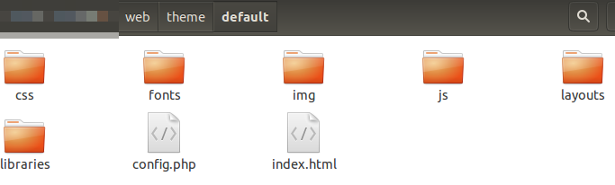
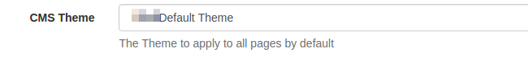

Themes
The CMS has a theme system which allows a developer to customise the look and feel of the application by creating
a theme and adding it to the web/theme/custom folder. The theme engine has been designed with the
principle of inheritance in mind, meaning that any resource requested by the CMS is passed through the currently active
theme and if that theme does not contain the resource, the default theme resource is served. This means that each theme
need only adjust the items required and it is not necessary to take a whole copy of the default theme.
Themes are modelled as sub-folders under the /theme/custom folder. The theme folder is contained in the /web CMS
installation folder. The default theme exists in a folder called "default".
The structure of the default theme is shown below:

Each theme has a simple config file called config.php which sets the title for the theme and some other meta data,
for example the default theme config.php is:
<?php
$config = array(
'theme_name' => 'Xibo Default Theme',
'theme_title' => 'Xibo Digital Signage',
'app_name' => 'Xibo',
'theme_url' => 'http://xibo.org.uk',
'cms_source_url' => 'https://github.com/xibosignage/xibo/',
'cms_install_url' => 'http://xibo.org.uk/manual/en/install_windows_client.html',
'cms_release_notes_url' => 'http://xibo.org.uk/manual/en/release_notes.html'
);The current CMS theme is activated in the General CMS Settings and is called Xibo Default Theme. This
list is automatically generated when a valid config.php file exists for a folder in /theme/custom.

Basic Changes
Basic theme changes, such as minor modifications to the CSS can be achieved by providing an override.css file in your
themes /web/theme/custom/<theme>/css folder. This CSS file is included as the last CSS include on
all pages and can be used to override the CSS. The default version of this file is empty.
You may also include a client.css file which will be applied to all Widgets that render in HTML (such as embedded,
ticker, etc). This is useful for applying global branding to all of your Displays.
Advanced Changes
It is possible to change almost any part of the CMS's visual user interface.
The CMS uses the Twig engine for its view layer, with all of its views contained in the /views root folder. Each
Twig view can be overridden by providing an alternative view_path setting in the theme config.php file. For example:
$config['view_path'] = PROJECT_ROOT . '/custom/<theme>/views/';You may store your custom views in the theme folder itself if you prefer - if you do this they will be accessible
over the web. You must use the PROJECT_ROOT global constant which refers to the root of the Xibo
installation.
While it is possible to do this, we recommend treating the below as useful information for extending the CMS rather than modifying it. Overriding the core navigation/pages and forms means that you cannot cleanly upgrade to new versions of the software.
Navigation
The CMS navigation bar is defined in authed-sidebar.twig and included in authed.twig. In versions prior to 1.8.3
the navigation bar was contained entirely in authed.twig.
Pages
All pages in the CMS extend the authed.twig file, which in turn extends the base.twig file. Supplying an override to
either of these files is the place to start customising the HTML/CSS of the CMS.
Forms
Forms in Xibo are served over XHR and rendered by JavaScript in the browser. Each form extends the
form_base.twig file.
Docker
The Docker containers ship with volumes pre-mounted for all of the /custom folder locations mentioned above. Adding
your files to these volumes will make those available to Xibo.
Examples
Changing the logo
A typical use case is to change the logo shown in the header. This example assumes that you do not have a theme yet. Create the following structure:
- Create the
/web/theme/customfolder if it does not exist - Create a sub-folder for your theme, for example
/web/theme/custom/mytheme
Next you need to provide a config file for your theme at /web/theme/custom/mytheme/config.php
<?php
$config = array(
'theme_name' => 'My Theme',
'theme_title' => 'My Theme',
'app_name' => 'Xibo',
'theme_url' => 'http://xibo.org.uk',
'cms_source_url' => 'https://github.com/xibosignage/xibo/',
'cms_install_url' => 'http://xibo.org.uk/manual/en/install_windows_client.html',
'cms_release_notes_url' => 'http://xibo.org.uk/manual/en/release_notes.html'
);The new theme can be activated in CMS settings under the Configuration tab. Do that now.
The CMS will now be checking your theme folder for all resources, including images, CSS and JavaScript. This means that we can drop a replacement logo into the theme and it will render that instead.
The default logo is stored in /web/theme/default/img/xibologo.png - take a copy of it and save it in
/web/theme/custom/mytheme/img/xibologo.png and modify it according to your requirements.
Adding a new link
A common example is to add a new link to the menu which directs the user to an external web page. This example assumes that you have created the theme shown in the "Changing the logo" example.
To provide a new link it is necessary to override one of the Twig views the CMS uses to render its content.
Add a custom view path to your config.php file in the $config array :
$config['view_path'] => PROJECT_ROOT . '/web/theme/custom/mytheme/views',You can then add Twig views to override the default views provided by the CMS, for example
take a copy of /views/authed-sidebar.twig, save it in your view_path and add a new link at the
appropriate place in the html.
You may want to develop a custom page within the CMS itself - more information can be found in the extending section.